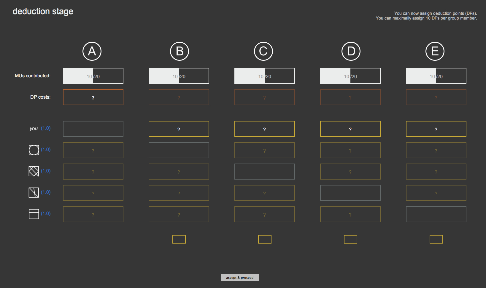
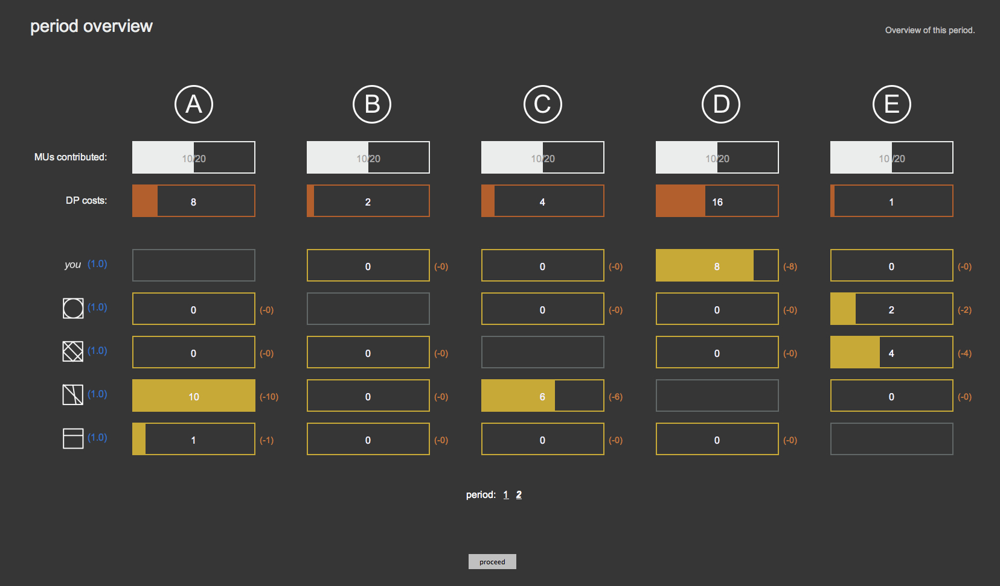

You only had to make a contribution decision in Period 1.
Starting with Period 2, each Period will have two stages: a Contribution Stage and a Deduction Stage.
The order of the Stages is the following:
1. Contribution Stage
2. Deduction Stage
In the Contribution Stage you will have to decide how much to contribute to a project,
exactly like you did in Period 1. For your convenience,
we summarize the instructions for the Contribution Stage below, before presenting the Deduction Stage.
Contribution Stage
At the start of the Contribution Stage, you and the other members each receive 20 MUs.
You and each of the other members will then decide how many of these 20 MUs to contribute to a project.
The total amount of MUs contributed to the project by group members will be multiplied by 1.5. This is the output of the project.
The output will be divided equally among the 5 group members.
Your earnings from the Contributions Stage = MUs kept to yourself + 1.5 * (sum of all MUs contributed to the project / 5)
After you and the all other group members have made your contribution, you will see how much each group member contributed to the project, the output of the project, and the earnings of each group member.
Deduction Stage
In the deduction stage, you have to decide whether or not to assign Deduction Points (abbreviated as DP)
to other members of your group.
You can assign up to a maximum of 10 DPs to each other group member;
thus, in total, you can assign up to 40 DPs, irrespective of your earnings from the Contribution Stage.
Each DP you assign reduces your own earnings by 1 MU, and reduces the earnings of the person you assign
it to by a number of MUs equal to your deduction effectiveness. Your and all other group member's deduction
effectiveness is 1.0.
Your earnings from the Contribution Stage will be reduced by the total number of DPs you assign to
other group member and by the deductions you receive from the other group members.
Consider the following hypothetical example of a group member A, who decides to assign:
8 DPs to B
2 DPs to C
0 DPs to D
1 DPs to E
Each DP that A assigns to others reduces his/her own payoff by 1 MU.
In this case, A assigned a total of 8 + 2 + 1 = 11 DPs, which will cost him/her 11 MUs.
Since A's deduction effectiveness is 1.0, the other members' earnings from the Contribution Stage
are reduced by his/her deductions in the following way:
B's payoff would be reduced by 8 * 1.0 = 8 MUs
C's payoff would be reduced by 2 * 1.0 = 2 MUs
D's payoff would be reduced by 0 * 1.0 = 0 MUs
E's payoff would be reduced by 1 * 1.0 = 1 MUs
The other group members also decide on how many DPs to assign to A
(and to every other group member). Suppose, for the sake of example, that:
B assigns 1 DPs to A, reducing his/her payoff by 1 * 1.0 = 1 MUs
C assigns 0 DPs to A, reducing his/her payoff by 0 * 1.0 = 0 MUs
D assigns 3 DPs to A, reducing his/her payoff by 3 * 1.0 = 3 MUs
E assigns 5 DPs to A, reducing his/her payoff by 5 * 1.0 = 5 MUs
Thus, in the hypothetical example, A would spend 11 MUs for assigning DPs, and would lose 9 MUs
through the DPs he/she received from other group members. His/her earnings
in this Period would thus be reduced by 20 MUs.
You will be informed about how other group members assigned DPs after all have made their decisions. You will then see how many DPs each member assigned to each other member and the earnings of each group member.
We will now proceed to explain the computer interface for the Deduction Stage.
Computer interface
At the time you will have to make your decision to assign Deduction Points, you will see a screen on the computer similar to this one:

On this screen ...
each column represents one group member
the first row shows you the contribution to the project of each member from the previous Contribution Stage
the blue numbers on the left indicate the deduction effectiveness of each group member
the light orange bar will show you how much DPs you would assign in total (and therefore how much MUs this would cost you)
By typing numbers in the small box below each column you can decide how many DPs you want to assign to the selected group member.
To make your decision, you have click on 'accept & proceed'. As soon as you do this, you will not be able to change your decision.
After everyone has made their decision in the Deduction Stage, you will receive feedback about your decisions and the decision of the other group members on a screen similar to this one:

On this screen ...
the orange bars show you how many DP each group member spend
the yellow bars below each group member indicate how many DPs this group member received from the other group members
The small number next to the yellow bar shows by how much the earnings of this group member are decreased
This number is calculated by taking the deduction effectiveness (blue numbers on the left) multiplied by the number of DPs.
Earnings
Your earnings in Period 2 is the sum of the earnings from the Contribution Stage and the Deduction Stage.
Note that this sum might be negative.
Your earnings =
+ Earnings from Contribution Stage
- Costs for assigning DPs
- MU deductions through DPs received from other group members
Please be aware that in the unlikely event that your total earnings at the end of the experiment are negative,
we will deduce these earnings from your show-up fee of 3 euros, at the rate of 100 MUs = 2.50 euros.
Before Period 2 starts we want to make sure that everybody has understood the rules correctly.
Therefore, you will be asked a few comprehension questions.
We will not proceed before everybody has answered all questions correctly.
If you have any questions, please raise your hand. If you do not have any questions at the moment, press the button below.